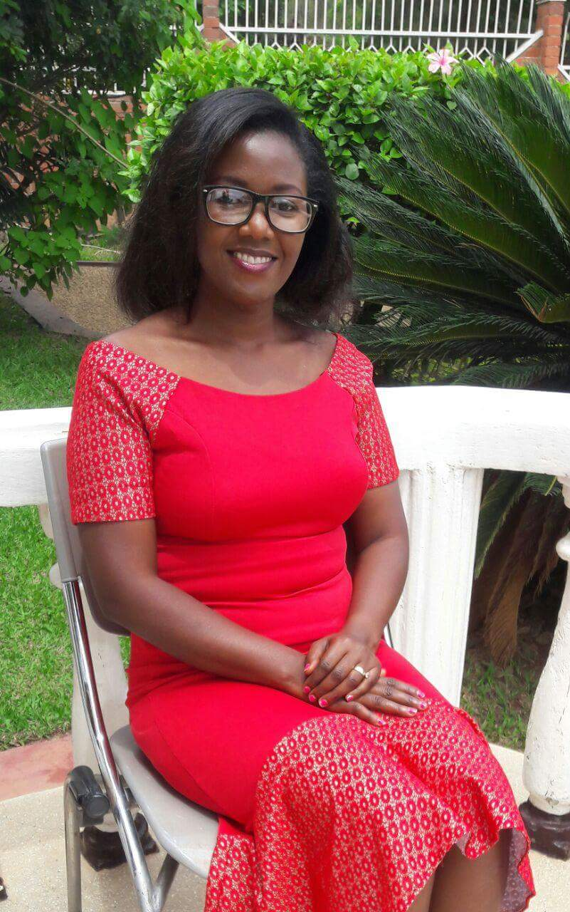

 Mrs. Clementine UWINGENEYE is an enthusiastic IT young professional, who is very much interested in furthering her knowledge and practical skills in the field of Computer science and other related fields.
Mrs. Clementine UWINGENEYE is Highly flexible, Reliable, organized, dynamic, honest and self-motivated, a hardworking woman with a positive attitude, eager to self-improvement and easily adjusts to a business environment, able to work with little or no supervision, team player, respectful of constituted authority and a quick decision maker with ability and willingness to learn additional skills quickly.
Here is my educational Background
2017-2018 - Imagerie medicale at Haute Ecole de la province de Liege
2008-2012 - Bachelor Degree of Agriculture at National University of Rwanda (NUR)
2005-2007: - A2 Advanced general certificate of secondary education in Biochimie at Groupe Scolaire Notre Dame du Bon Conseil
2001-2004: - (O’ Level) Groupe Scolaire Notre Dame Du Bon Conseil Byumba
Here's my working experience
2015-2016:- Work as Mobilization officer, climate Resilient Post-Harvest and Agribusiness Support project (PASP) including blended Adaptation for Smallholder Agriculture Programme Grant (ASAP)."
2015 January- 2015 June- Worked as Temporary staff in Heifer International Rwanda
2014 March-2014 December - Assistant of Extensions Coordinators for KWAMP Project
2013 September-2014 February: - Intern and an office support service provider in Administration and Programs in Heifer International/ Rwanda working with cooperatives and responsible for mobilize and interact with farmers in different agricultural and livestock management activities.
2013 - assistant researcher in Capacity Development Consultant(CDC)Ltd/Rwanda.
2013 November to December: - Data Collector at IMANZI Company Ltd.
"A dream doesn't become reality through magic;it takes sweat,determination and hard work."